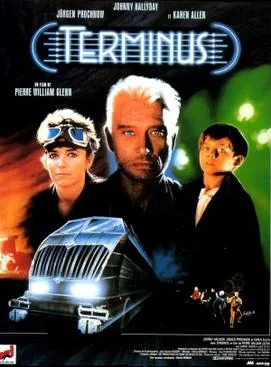

The genetics
Cloning lies behind the film's deliberately vague plot. The rulers of Terminus run a deadly race that secretly harvests human blood for cloning experiments, and the boy genius Mati turns out to be an artificial creation, cloned by a mad scientist who works for Sir, a megalomaniac who wants to rule the world with artificial people. Both villains are played, campily, by Jürgen Prochnow. The genetic plot is a dystopian backdrop more than a subject: critics found the film's details wilfully obscure, and the sources do not explain how the cloning works or how the plan ends. The film never explains what the blood is used for; real cloning transfers a cell nucleus into an egg and produces a baby, not a ready-made person.
How genetics is portrayed
- Overall portrayal of genetics
- negative Cloning belongs to a dystopian conspiracy of a mad scientist and a megalomaniac who want to rule the world with artificial people; nothing in the film presents it favourably.
- Outcome of the genetic intervention
- negative The race that feeds the cloning programme sends drivers to torture and death, and Mati is a cloned child kept under surveillance as an instrument of a plan of world domination.
- The Doctor
- villain Aim: power (negative). The mad scientist cloned Mati and runs cloning experiments fed by blood harvested through the deadly race; he is staged as sinister and campy, watching his creation like a specimen.
- Sir
- villain Aim: power (negative). The megalomaniac master of Terminus employs the Doctor to make artificial people with which to take over the world; the film presents him as a campy antagonist.
The story
In 2037, a televised sport sends truck drivers across a hostile country toward a destination called Terminus. The leading vehicle, a high-tech truck with an artificial intelligence called Monster, was designed by a boy genius, Mati, who follows the race by satellite. When the truck's AI fails, its driver, Gus, strays into uncharted territory, where she is captured and tortured by hooded gangs; before dying she gives the truck's access codes to a fellow prisoner, Stump, a former soldier. Stump takes the wheel and rescues a young slave girl, Princess, who turns out to be Mati's sister. The race is in fact a decoy that collects human blood for the cloning experiments of the masters of Terminus, and Mati himself is a clone, watched and evaluated by the sinister Doctor who created him on behalf of Sir, who plans to take over the world with artificial people.